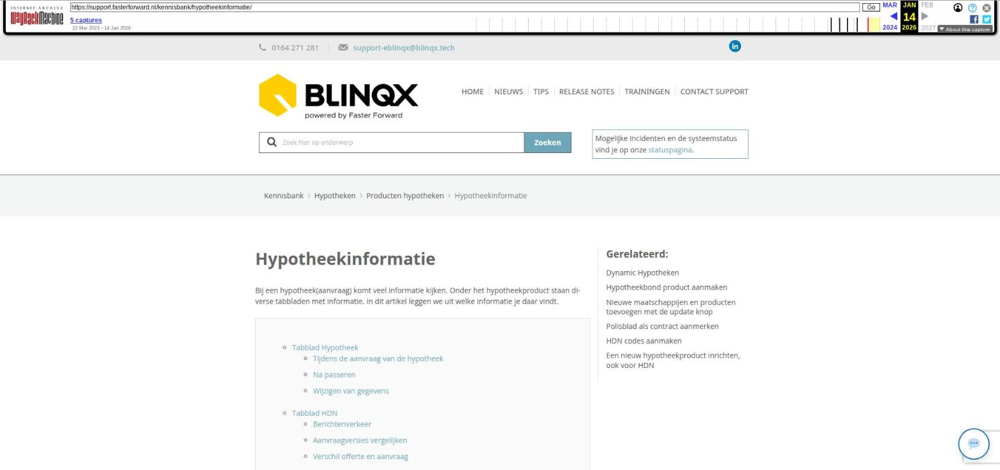

Hypotheekinformatie

Tekstinhoud
Hypotheekinformatie
Bij een hypotheek(aanvraag) komt veel informatie kijken. Onder het hypotheekproduct staan diverse tabbladen met informatie. In dit artikel leggen we uit welke informatie je daar vindt.
Tabblad Hypotheek
Tijdens de aanvraag van de hypotheek
Na passeren
Wijzigen van gegevens
Tabblad HDN
Berichtenverkeer
Aanvraagversies vergelijken
Verschil offerte en aanvraag
Bankgarantie
Wonen
Inkomen
Workflow
Communicatie
Mutaties
Samenvatting
Tabblad Hypotheek
Onder het tabblad Hypotheek is een overzicht te vinden met de belangrijke gegevens omtrent de hypotheek. De getoonde gegevens zijn afhankelijk van de fase waarin de hypotheek zich bevindt.
Tijdens de aanvraag van de hypotheek
Tot aan de passeerdatum van de hypotheek zie je duidelijk de status van de aanvraag, de aan te leveren stukken, de belangrijke datums en de status van de bankgarantie.
Na passeren
Na de passeerdatum zie je direct de algemene hypotheekgegevens, het hypotheeknummer en de passeerdatum. Daarnaast zie je de recente communicatie, contactpersonen, het energielabel, verpande levensverzekeringen en belangrijke datums zoals het einde van de rentevastperiode.
Onderaan zie je weer de leningdelen van de hypotheek. Hier zie je de rentevast periode, wanneer de looptijd afloopt en of deze in Box 1 of Box 3 valt.
Wijzigen van gegevens
Als je in bovenstaande schermen gegevens wilt wijzigen, klik je op het wijzigingsicoon. Je komt dan in een ander scherm terecht.
Links vind je onder andere informatie over bij wie de hypotheek intern in behandeling is, belangrijke data betreffende de hypotheek, de geldverstrekker en bedragen. Rechts in de productkaart zijn de leningdelen met bedragen en data te vinden. Ook zie je hier de actuele hypotheekinformatie van de geldverstrekker na de passeerdatum. Er wordt namelijk informatie, zoals het hypotheeknummer (offertenummer) van de geldverstrekker, overgenomen uit het "Lening in beheer" bericht van de geldverstrekker (SX via HDN).
De volgende gegevens zijn hiermee up-to-date:
Tabblad HDN
Indien de hypotheekaanvraag via HDN verzonden is dan komt in het product het tabblad HDN zichtbaar. Dit tabblad is onderverdeeld in 3 andere tabbladen, namelijk Berichtenverkeer, Aanvraagversies vergelijken en Verschil offerte en aanvraag.
Berichtenverkeer
Hier vind je al het berichtenverkeer wat via HDN is ontvangen en verzonden. Door middel van filters kan je aangeven wat je hier wilt tonen.
Hier kan je lezen wat de verschillende type berichten betekenen. Vanuit dit tabblad kan je ook controleren of berichten daadwerkelijk verzonden zijn.
Aanvraagversies vergelijken
In het aanvraagtraject kan het voorkomen dat de originele aanvraag aangepast moet worden. Vanuit het adviespakket kan je de aangepaste aanvraag naar eBlinqx versturen. Deze wordt verwerkt in de bestaande productkaart. Door deze functionaliteit blijft alle communicatie en (HDN) berichtenverkeer op dezelfde hypotheek geregistreerd staan. Dit zorgt voor een overzichtelijke weergave van de aanvraag(geschiedenis).
Let op: Omdat het wordt behandeld als een nieuwe aanvraag gaan alle velden die niet door HDN gevuld zijn hierbij verloren, met uitzondering op de ontbindende voorwaarden. Als deze datum is gevuld neemt eBlinqx deze over in de nieuwe versie.
Middels het tabblad "aanvraagversies vergelijken" is het mogelijk de huidige versies met voorgaande versies te vergelijken.
Verschil offerte en aanvraag
In dit tabblad kan je zien of de hypotheekofferte afwijkt van de initiële aanvraag. eBlinqx vergelijkt deze twee (AX en OX via HDN) namelijk met elkaar en geeft het aan wanneer deze twee van elkaar afwijken. Dit doet eBlinqx voor zowel het rente-aanbod als het bindend aanbod.
Melding van afwijking in taak
Wanneer er mogelijk een afwijking is, zie je dit in een taak in je takenlijst. In de bijbehorende taak en omschrijving wordt dit namelijk vermeld, bijvoorbeeld: "Rente-aanbod is ontvangen via HDN. Controleer offerte".
Informatie ophalen met tags
Of er een verschil is, is op te halen met de tag [offerte->hdn ox xml->afwijkend van ax], output: ja/nee. Een volledig overzicht met verschillen is op te halen met [offerte->hdn ox xml->verschillen].
Bankgarantie
Vanuit dit tabblad kan je digitaal een bankgarantie aanvragen bij Nationale Waarborg of BNP Paribas. In dit artikel lees je er meer over.
Wonen
Onder het tabblad Wonen heb je een duidelijk overzicht van alle gegevens en kosten van de woning van de klant.
Ook is er meer informatie te vinden over de Energie:
Energieklasse
Opnamedatum
Geldig tot
Registratiedatum Let op, deze zit niet in het AX maar kan je zelf invoeren
Berekeningstype
Energieprestatieindex
Energieprestatie Forfaitair Let op, deze zit niet in het AX maar kan je zelf invoeren
Inkomen
Onder het tabblad Inkomen vind je diverse informatie over het inkomen. Deze inkomens kan je handmatig toevoegen door middel van het plusicoon. Je kunt dan kiezen welk type inkomen, bijvoorbeeld inkomen uit loondienst of pensioen, je wilt toevoegen. Ook komen hier de inkomens te staan die vanuit HDN berichten worden meegestuurd.
De inkomens onder dit tabblad worden gebruikt voor het synchroniseren van de inkomens naar Fastlane en Hypotheekbond. Achter de gegevens die worden gesynchroniseerd staat een icoon met een bliksem. Dat betekent dat deze gekoppeld zijn aan het product en worden gesynchroniseerd. Wil je niet dat deze inkomens gesynchroniseerd worden dan kan je klikken op dit icoon. Dan ontkoppel je het inkomen van het product en komt er een stekkericoon te staan.
Workflow
Binnen eBlinqx wordt het hypotheekproces aangestuurd door middel van workflows. Onder het tabblad Workflow kan je zien welke workflows actief zijn onder het hypotheekproduct. Hier kan je, indien je de juiste rechten hebt, workflows toevoegen of verwijderen. Let op: het toevoegen of verwijderen van een workflow heeft invloed op de verdere afwikkeling van de hypotheekaanvraag in eBlinqx. Doe dit niet zomaar. In sommige gevallen is het nodig, bijvoorbeeld wanneer de hypotheek ongewenst op vervallen staat.
Communicatie
Hier vind je alle communicatie met betrekking tot de hypotheek terug. Dit kunnen e-mails naar de klant zijn of registraties die je hebt gemaakt.
Mutaties
Gaandeweg kunnen er wijzigingen op een hypotheek plaatsvinden na het aanvraagtraject. Deze wijzigingen kunnen betrekking hebben op de volgende velden uit de hypotheekkaart:
In het linkerdeel van het product:
Hoofdsom
Oorspronkelijke hoofdsom
Norm
Risicoklasse
In het rechterdeel van het product:
Deel hoofdsom
Oorspronkelijke deel hoofdsom
Rentepercentage
Rentevast periode
Rentevast einddatum
Maandelijks bedrag
Looptijd
Einddatum
Zodra één van deze velden wordt aangepast, wordt deze wijziging bijgehouden op het tabblad "mutaties". Op dit tabblad staan alle voorgaande wijzigingen.
Wanneer er meerdere mutaties op één dag plaatsvinden worden deze als 1 mutatie weergegeven op het tabblad met alle wijzigingen apart vernoemd.
Samenvatting
Onder een hypotheekproduct vindt veel interactie plaats. Er worden bijvoorbeeld taken aangemaakt en e-mails verstuurd. Er worden documenten aangeleverd. Onder het tabblad Samenvatting vind je een overzicht van al deze activiteiten terug.
Laatste update: 15 oktober 2025
Was deze informatie nuttig?
Ja Nee